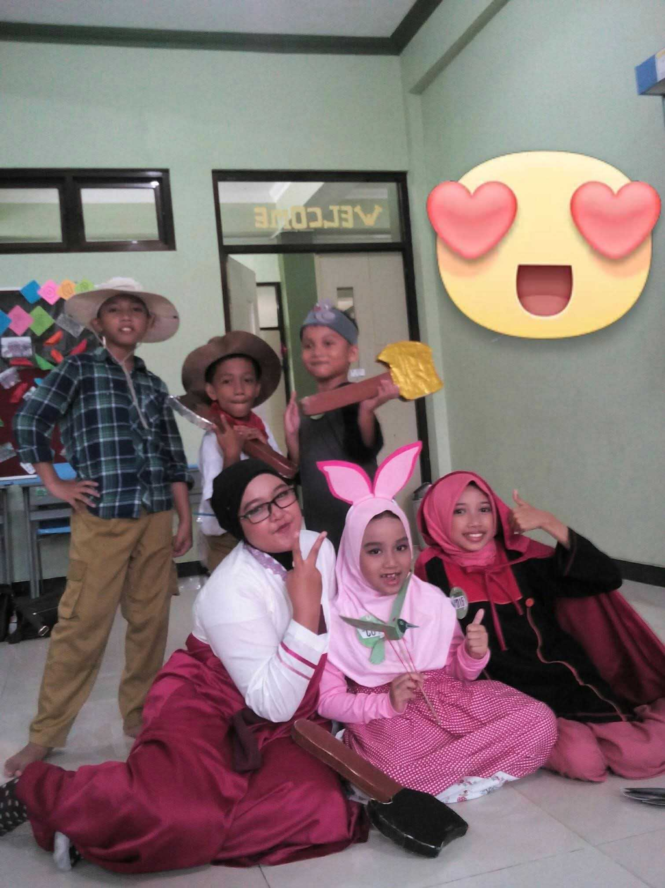
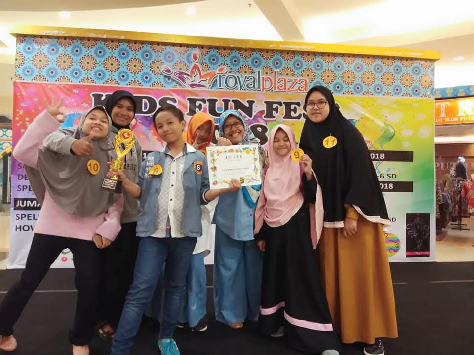
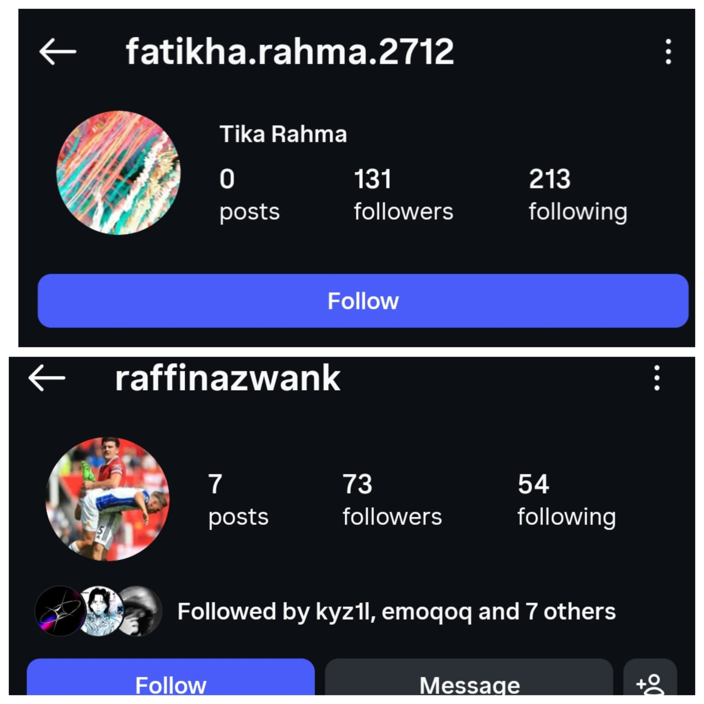
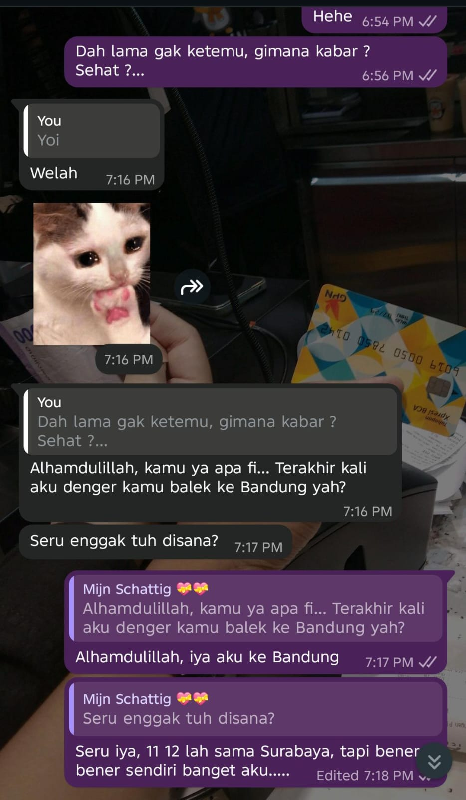
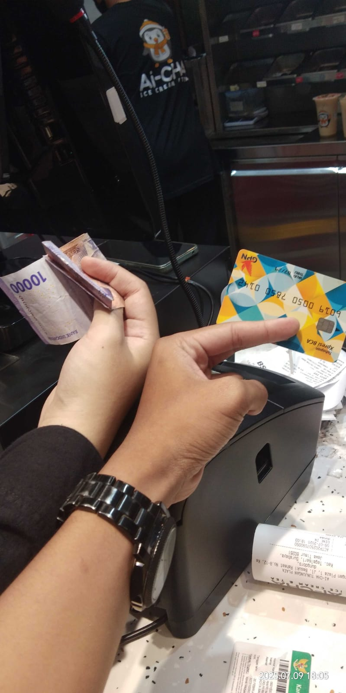
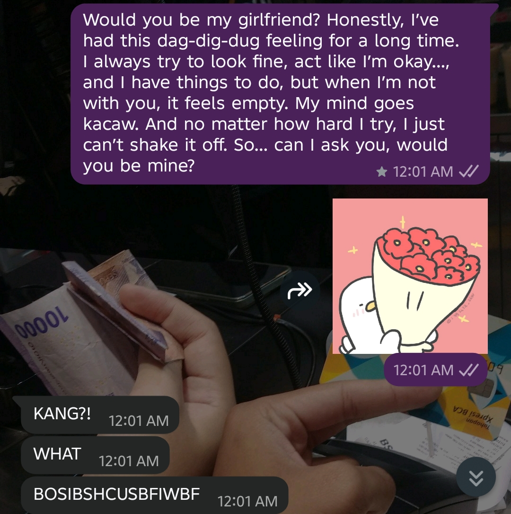
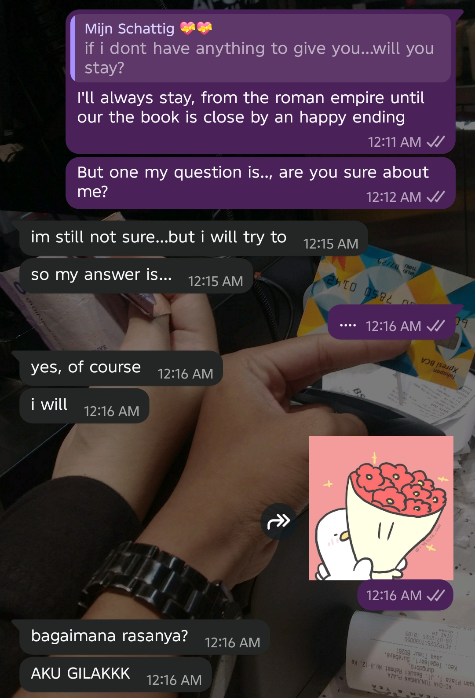

Jejak kenangan kita, satu babak satu foto.
Waktu itu aku ingat kita banyakan deh, ada aku, kamu, Sera, Adhwa (maaf aku lupa nulis namanya yang bener gimana hehe), dan yang lainnya. Ini momen pertama kali kita lomba bareng di Labschool sebelum semuanya dimulai.

📸 foto1.jpgAku jujur lupa siapa aja yang ada di sini, seingatku cuma ada aku, kamu, Sera, Alisha, Aiman, dan beberapa lainnya yang aku gak ingat lagi. Tapi lomba ini jujur jadi awal pertama kali kita dekat, kenal baik, dan berjuang bersama. Thanks my mentor, mwah Hunny mwah!

📸 foto2.jpgInilah fase di mana aku pertama kali bener-bener cuma pengen kamu. Kita saling jauh untuk pertama kalinya, tidak menapakkan kaki di tempat yang sama—kamu dengan SMP-mu dan aku masih di SD yang sama. Suatu hari Jumat, entah kenapa hari itu aku ingin banget jumatan bersama yang lainnya (biasanya sih sembunyi dulu baru jumatan pas udah waktunya takbir, hehe). But this day was kinda different. Hari itu aku jumatan, dan di sela antara kedua khutbah Jumat aku berdoa: "Ya Allah hanya satu permintaanku, aku pengen ketemu Tika setelah ini." Dan yup, doa itu terkabul! Beres jumatan aku langsung ketemu kamu setelah dibilangin Sera atau Alisha (yup, 2 orang itu yang selalu bersama). Aku ketemu kamu dan yaa... kita masih malu-malu hehehe.
Secara jujur aku selalu mudah untuk mengingat ini, yap karena ini yang menjadi paling panjang dan paling susah untuk aku rasakan. Kita dulu belum pernah WA-an. Aku punya kontakmu dan kamu punya kontakku, tapi ternyata itu semua belum cukup. Kamu ganti HP, dan aku ganti nomor serta akun IG-ku. Hampir setiap beberapa bulan sekali aku selalu DM kamu—dari gap 1 bulan, 3 bulan, hingga perlu 1 tahun sekali untuk aku bisa DM kamu. Entah apa yang terjadi, kita ternyata masih memiliki 1 benang merah yang sangat-sangat kuat terikat apapun yang terjadi. Pada saat itu benang merah kita adalah Hurin. Yaa, perempuan yang nyebelin jujur sumpah tu anak nyebelin, ngejar ae selalu pas SD. Tapi yaa mau bagaimanapun, berkat dia kita bisa terhubung kembali meskipun ada beberapa drama lagi di sini (hehe, aku gak mau ingat lagi sejujurnya drama ini). Dan ternyata benang merah itu tidak sekecil ataupun setipis itu agar bisa diputuskan. Talinya aku rasa cukup tebal dan besar. Selain Hurin, kita juga masih punya banyak banget jembatan yang selalu menjembatani kita, dari Richel, Vieri, dan selain orang, ada banyak hal lainnya yang selalu mempererat kita.

📸 foto4.jpgAwal kita chatan jujur kakuuu banget kayak beneran kating dan deting, meskipun sekarang udah gak kayak gitu sih hehehe. Dulu kita ngobrol saling nyemangatin, dan aku ingat banget... aku pernah kemalaman kehujanan terus aku WA kamu saat itu. Yup, yang aku dari sekolah sebelum magrib sampai rumah udah jam 10 lewat hehe, itu foto ke-2-ku deh yang aku pap ke kamu. Lalu ada cerita ketika kamu bercanda pasang status WA mau beli barang, terus yaaa instingku langsung beliin kamu hehe (sekarang udah habis yaa, huum?). Terus aku ajak kamu kenalan sama Richel, dan banyaknya yaa kejadian-kejadian manis kita dulu di awal fase ini.

📸 foto5.jpgYaaa kita bertemu pada kondisi yang gak baik-baik aja yah. Setelah lama kita musuhan (tapi gak musuhan banget sih, kayak gitu lah), yaa fase di mana kita saling menahan diri. Padahal sama-sama suka tapi gak ada yang mau ngomong duluan, gimana sih kita berdua ini wkwk. Tapi gak apa-apa, segala hal ada waktunya yaa... dan yaa kita akhirnya sampai di titik ini.

📸 foto6.jpgSejujurnya lebih baik aku ceritain dari yang sebelumnya yaa. Tanggal 16 Agustus malamnya kita ngobrol, Hunny baru beres ospek dan baru sampai di kosnya Steff (kalau aku gak salah ingat). Kita berbincang dan yaa sejujurnya aku rasa memang kita masih ada rasa canggung, seperti ada yang mengganjal. Tapi yaaa makin malam kamu makin maksa aku untuk jujur tentang perasaanku ke kamu. Dan yaa, tepat tengah malam jam 00.01 aku tembak kamu sayangku mwah, dan tepat jam 00.16 Hunny menerima apa yang aku kasih dari aku untukmu (segala halnya aku pada kamu, tidak hanya pacaran saja, tapi aku percaya kita bisa membawa ini ke jenjang yang lebih serius).

📸 foto7.jpg
📸 foto7.jpg'">Satu tahun berlalu sejak malam itu. Melewati masa-masa jauh, telfonan larut malam, sampai tawa dan seru-seruan bareng di setiap prosesnya. Terima kasih yaa udah selalu sabar nungguin, udah selalu jadi tempat aku pulang meskipun cuma lewat layar HP. Perjalanan panjang dari masa SD sampai hari ini membuktikan kalau benang merah kita beneran sekuat itu. Happy 1st Anniversary, sayangku! Aku gak sabar untuk terus berjalan bareng kamu sampai ke pelaminan dan masa depan kita nanti.
Kalau kamu sampai baca ini, artinya kamu udah menelusuri semua kenangan yang telah kita lewati. Setahun ini bukan hal yang mudah, dan bertahun-tahun sebelum ini pun sudah kita lewati bersama. Tapi whatever it is, kamu tetap jadi alasan aku untuk selalu semangat dan selalu milih untuk bertahan.
Banyak hal yang harus kita hadapi—baik masalah pribadi maupun masalah kita bersama. Ya, aku juga ada beberapa masalah pribadi yang nanti akan aku ceritain ke kamu suatu saat. Tapi ya, back again, selalu ada kamu yang selalu aku pikirkan. What if kalau misalnya aku nyerah? Maka itu akan sangat menyulitkan kita untuk meraih cita-cita kita. Heem, jadi aku enggak mau sampai itu gagal. Aku mau mencoba dan berjuang agar ini berhasil.
Minta maaf ya kalau bikin kamu galau atau pusing tadi. Heem, to be honest ya, emang aku agak pusing banget hari ini, jadi ya agak ngelindur nulisnya. Tapi ya, back again... memang ini sebuah plan yang sangat jelek, tapi inilah aku. Aku cuma ingin menyampaikan ini dari lubuk hati aku yang paling dalam.
Website ini mungkin belum sempurna, sangat jauh dari kata ideal dengan apa yang aku inginkan. Tampilannya masih berantakan banget. Tapi ya enggak apa-apa, yang penting kan isinya.
Inilah rumahnya. Rumah yang masih belum sempurna, rumah yang di mana kita masih membangunnya bersama. Nanti aku bakal rapihin ini lagi, dan mungkin tahun depan aku akan bangun ulang secara total, pasti deh. Tapi website ini hanyalah sebuah alat—sebuah perantara pesan, bukan tujuan akhir kita. Yang aku inginkan, tujuannya ya adalah KITA. Nah, itu aja. Aku gak mau mempersulit apa pun bagi kita.
Setelah kita berjarak jauh, jauh banget... Pernah lebih jauh? Pernah. Pernah beda jam? Pernah. Aku akui satu tahun ini bukan tahun yang mudah, bahkan sangat sulit. Kadang ada kalanya aku merasa kayak, "Damn, ini baru tahun pertama lho," atau kata orang, "Biasanya kelipatan empat nih bakal nyusahin." But yeah, kembali ke diriku yang sebenarnya... I don't really care about 4 tahun itu, I just don't give a care. Kenapa? Karena I know, dan aku udah pernah bilang sama kamu: whatever it is, whatever the struggle, yes... I'm always choosing you for the entire of time.
Makasih ya untuk satu tahun yang luar biasa ini. Aku tahu hari-hari kita lagi berat sekarang, sama-sama capek. Tapi aku janji, aku akan selalu ada untuk kita. Aku akan selalu ada di sini, kapan pun itu, jam berapa pun itu.
And I loved you yesterday, I love you today, and I will love you tomorrow. Love you, honey.
Bubby 🤍